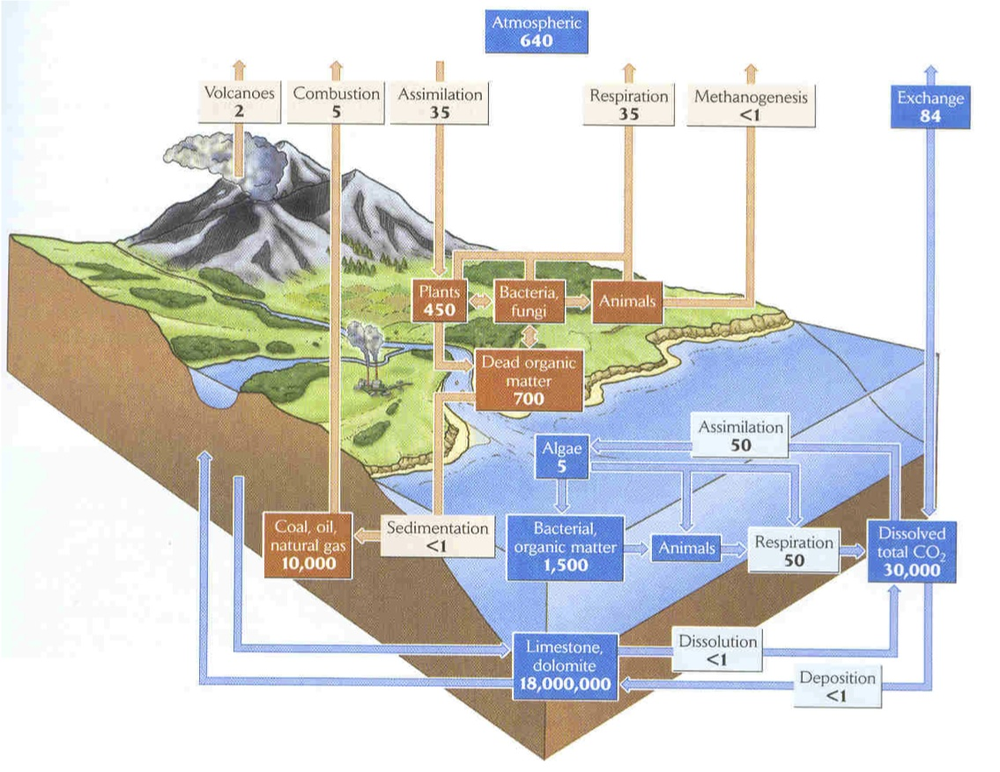

class: center, middle, inverse # Transport II: the sequal --- #Review from last lecture: key structures: -Xylem -Vessel elements (99% of angiosperm species) -Tracheids (smaller than vessels; all vascular plants) -Pits -Phloem -Stomata -Cambium <img src="http://edenhills.files.wordpress.com/2012/04/dsc_00521.jpg" alt="Drawing" style="width: 300px;"/> --- #More review: key concepts: -Transpiration-photosynthesis compromise -Water potential -Stomatal regulation of water loss -Cohesion-tension theory -Embolism -Percent loss of conductance (PLC50) --- class: center, middle, inverse ###Cohesion-tension theory <img src="http://www.uic.edu/classes/bios/bios100/lecturesf04am/model.gif" alt="Drawing" style="width: 520px;"/> --- class: center, middle, inverse # Now for this lecture: Key concepts: ##Plant level cycling ##Ecosystem level cycling ##Mass balance (bathtub) principles <img src="http://www.per.marine.csiro.au/staff/Fabio.Boschetti/ToyModels/Figures/BathLab_cartoon.jpg" alt="Drawing" style="width: 200px;"> --- ##Bathtub principles (conservation of mass) <img src=" http://www.nature.com/scitable/content/ne0000/ne0000/ne0000/ne0000/17410955/f1_sterner_ksm.jpg" alt="Drawing" style="width: 600px;"> --- ##Bathtub principles (conservation of mass) <img src=" http://www.nature.com/scitable/content/ne0000/ne0000/ne0000/ne0000/17411188/f4_sterner_ksm.jpg" alt="Drawing" style="width: 700px;"> --- #Organisms are like choosy bathtubs <img src=" http://www.nature.com/scitable/content/ne0000/ne0000/ne0000/ne0000/17413752/f5_sterner_ksm.jpg" alt="Drawing" style="width: 800px;"> --- class: center, middle, inverse #Key elements for plants: ##Nitrogen (1.5% of healthy plant) ##Phosphorus (0.2% of healthy plant) ##Other stuff (base cations: CA, K, Mg) see chapter 29 of the book --- class: center, middle ##What is the most common biological molecule on earth? --- class: center, middle, inverse <img src="http://upload.wikimedia.org/wikipedia/commons/thumb/d/d0/Aerial_view_of_the_Amazon_Rainforest.jpg/1280px-Aerial_view_of_the_Amazon_Rainforest.jpg" alt="Drawing" style="width:750px;"/> --- class: center, middle, inverse <img src="http://4.bp.blogspot.com/-V47fG25ZCBk/TmYo2t_MJ9I/AAAAAAAAALU/j4poVvfIS-g/s1600/BORNEO+tallest+tree.jpg" alt="Drawing" style="width:750px;"/> --- class: center, middle, inverse <img src="http://images.fineartamerica.com/images-medium-large/tropical-palm-leaf-christopher-elwell.jpg" alt="Drawing" style="width:750px;"/> --- class: center, middle, inverse <img src="http://www.bio.miami.edu/dana/pix/leaf_micrograph.jpg" alt="Drawing" style="width:750px;"/> --- class: center, middle, inverse <img src="http://www.teara.govt.nz/files/di16850enz.jpg" alt="Drawing" style="width:750px;"/> --- class: center, middle <img src="http://upload.wikimedia.org/wikipedia/commons/5/53/Plant_cell_wall_diagram.svg" alt="Drawing" style="width:550px;"/> --- class: center, top #What is the most common protein on earth? -- ###Hint: what's the most common biochemical reaction on earth? --- class: center, middle <img src="http://upload.wikimedia.org/wikipedia/commons/7/74/Rubisco.png" alt="Drawing" style="width:550px;"/> --- class: center, middle <img src="http://hyperphysics.phy-astr.gsu.edu/hbase/organic/imgorg/rubc3.gif" alt="Drawing" style="width:550px;"/> --- class: center, top, inverse ## Scaling up from leaf to globe: the global carbon cycle -- <p></p> figure from Ricklefs --- class: center, top, inverse But it's not just about carbon... -- <img src="http://upload.wikimedia.org/wikipedia/commons/thumb/f/fb/Blue_Wildebeest%2C_Ngorongoro.jpg/260px-Blue_Wildebeest%2C_Ngorongoro.jpg" alt="Drawing" style="width:300px;"/> Animal tissues (endotherms) are about 15% nitrogen -- <img src="https://encrypted-tbn0.gstatic.com/images?q=tbn:ANd9GcRzMYhD_lOyPzNG6pAEesUU1DngwzTQgF_kO6vsej-yLBXMZGIOJw" alt="Drawing" style="width:300px;"/> Growing leaves are about ~3% nitrogen --- class: center, top, inverse ##Uses of N: every enzyme in all life but especially Rubisco <img src="http://upload.wikimedia.org/wikipedia/commons/a/ae/GLO1_Homo_sapiens_small_fast.gif" alt="Drawing" style="width:300px;"/> <img src="http://www.chem4kids.com/files/art/bio_enzyme2.gif" alt="Drawing" style="width:300px;"/> --- class: center, top ##Uses of P <img src="http://upload.wikimedia.org/wikipedia/commons/thumb/4/4c/DNA_Structure%2BKey%2BLabelled.pn_NoBB.png/1024px-DNA_Structure%2BKey%2BLabelled.pn_NoBB.png" alt="Drawing" style="width: 500px;"> --- class: center, top, inverse <img src="http://upload.wikimedia.org/wikipedia/commons/8/81/ADN_animation.gif" alt="Drawing" style="width: 300px;"> --- "Green revolution" <img src="http://i01.i.aliimg.com/photo/v0/285580641/NPK_Fertilizer.jpg" alt="Drawing" style="width: 700px;"> --- <img src="http://wiki.chemprime.chemeddl.org/images/a/a8/Haber_Process_Diagram.gif" alt="Drawing" style="width: 400px;"> <img src="http://upload.wikimedia.org/wikipedia/commons/1/1e/Fritz_Haber.png" alt="Drawing" style="width: 200px;"> ##Haber-Bosch process --- <img src="http://graphics8.nytimes.com/images/2007/08/04/us/04phosphates-600.jpg" alt="Drawing" style="width: 600px;"> ###A Phosphorus mine in Florida via NYtimes --- ###Fertilizer use in China <img src="http://www.australian-shares.com/assets/images/china-annula-fertiliser-consumption.gif" alt="Drawing" style="width: 600px;"> --- <img src="http://www.globalchange.umich.edu/globalchange1/current/lectures/kling/nitrogen_cycle/N_deposition.jpg" alt="Drawing" style="width: 700px;"> Change in N deposition in g per Ha per year --- class: center, middle, inverse <img src="http://www.lternet.edu/sites/default/files/photo1%5B5%5D_0.jpg" alt="Drawing" style="width: 650px;"> --- class: center, middle, inverse <img src="http://www.lternet.edu/sites/default/files/photo1%5B5%5D_0.jpg" alt="Drawing" style="width: 650px;"> --- class: center, middle, inverse <img src=" http://www.hubbardbrook.org/rotates/rotate1.jpg" alt="Drawing" style="width: 650px;"> --- class: center, middle, inverse <img src=" http://www.nature.com/scitable/content/ne0000/ne0000/ne0000/ne0000/17413834/f8_sterner_ksm.jpg " alt="Drawing" style="width: 650px;"> --- class: center, middle <img src="http://www.nature.com/scitable/content/ne0000/ne0000/ne0000/ne0000/62238224/Sigman&Hain_NatureEdu-626_1_2.png" alt="Drawing" style="width:550px;"/> ###Sigman & Hain (2012) Nature --- #Ecosystems -- from molecules <img src="http://upload.wikimedia.org/wikipedia/commons/8/81/ADN_animation.gif" alt="Drawing" style="width: 200px;"> -- to the globe <img src="../graphics/biome_map.jpg" alt="Drawing" style="width:250px;"/>